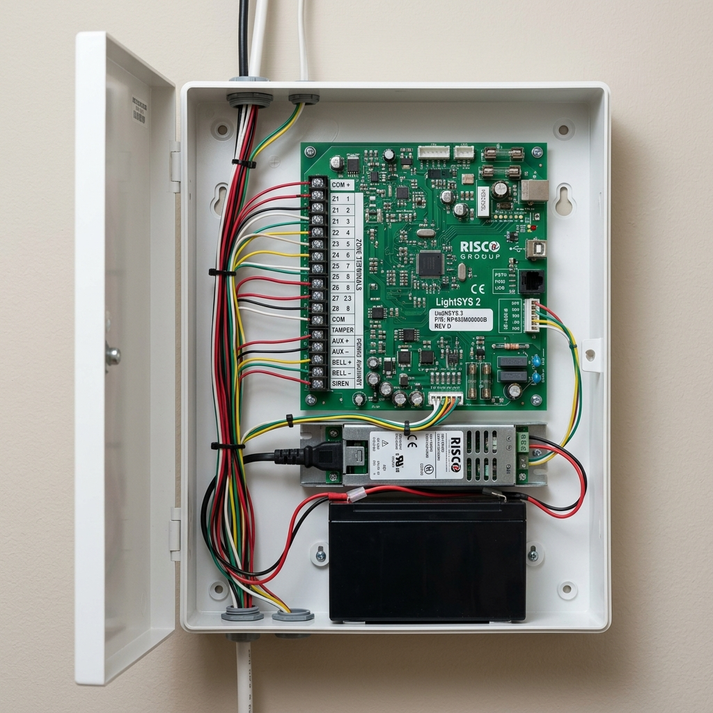

1. The five components of every alarm system
Every burglar alarm system, from a basic single-zone home unit to a 50-zone commercial installation, is built from the same five components: a controller, keypads, detectors and sensors, a siren, and a communication module. Understanding what each does removes the mystery from a system that most people arm and disarm without ever thinking about.
2. The controller — the brain
The controller is the central processing unit of the alarm system. It is a small box, typically installed in a concealed location — inside a wardrobe, above a ceiling tile, in an electrical riser — that contains the main circuit board, the power supply, and the backup battery.
The controller has a number of inputs, each called a zone. A zone is a connection point for a detector or group of detectors. Most basic controllers come with 8 zones as standard. Expansion modules can increase this — the RISCO LightSYS 2, for example, can be expanded to 50 zones, making it suitable for medium-sized commercial premises.
The controller runs continuously on mains power, charging the backup battery. If mains power is cut — intentionally or during a power failure — the backup battery takes over and the system continues to operate normally. Most controllers provide at least 4 to 8 hours of backup operation, which is sufficient to outlast a typical power outage.

3. Keypads — the user interface
The keypad is how the user interacts with the system — arming, disarming, checking zone status, resetting after an alarm, and programming the system. It is typically mounted near the main entrance at a convenient height.
Keypads range from simple numeric pads with LED indicators to LCD display panels that show zone names and system messages, to touchscreen units with graphical interfaces. The choice is largely aesthetic and budget-driven — the underlying functionality is the same.
A well-designed installation has the keypad positioned so that a user entering the property can reach it within the entry delay period without rushing. The entry delay — typically 30 to 60 seconds — is the window of time between a perimeter zone triggering and the alarm sounding, during which a legitimate user can disarm. Too short and it creates stress. Too long and it gives an intruder the same window.
The keypad location and the entry/exit delay times are design decisions, not defaults. If your current setup feels rushed or inconvenient, ask your installer to adjust the delay times — it is a software setting that takes five minutes to change.
4. Detectors and sensors — the eyes of the system
Detectors are the devices that sense intrusion and trigger the controller. Each detector connects to one zone on the controller. When a detector registers an event, it sends a signal to the controller, which decides — based on the zone type and the current arm state — whether to trigger the alarm.
The main types used in Singapore residential and commercial installations:
- Magnetic door and window contacts are the most common detector in any system. A magnet on the moving part of the door or window, a reed switch on the fixed frame. When they separate — the door opens — the zone triggers. Simple, reliable, no calibration needed.
- PIR motion sensors detect infrared radiation from moving bodies — the heat signature of a person moving through the sensor's field of view. Standard PIR sensors cover a cone of approximately 90 degrees to a range of 12 to 15 metres. They are ideal for interior zones — living rooms, corridors, common areas.
- Dual-technology sensors combine PIR with microwave detection. Both must trigger simultaneously for the zone to activate. Significantly reduces false alarms in environments with temperature variation, large pets, or air-conditioning that can fool a standard PIR. Worth specifying in warehouses, commercial kitchens, and any space with significant thermal movement.
- Glass break sensors are acoustic detectors tuned to the frequency of breaking glass. Used where large glazed areas — shopfronts, glass partitions — cannot practically be protected with door contacts.
- Panic buttons are fixed or portable buttons that trigger the alarm immediately regardless of whether the system is armed. Used at reception desks, cashier counters, and bedrooms. Wired panic buttons connect directly to the controller. Wireless variants, such as the AJAX panic button, transmit via radio.
5. The siren — deterrence and notification
The external siren box serves two purposes. The audible alarm — typically 100 to 110 dB — deters the intruder and draws attention from neighbours and passers-by. The strobe light indicates the source of the alarm visually, helping responders locate the correct property.
Under Singapore's Code of Practice for burglar alarm systems, the siren cannot sound for more than 10 continuous minutes. This is a legal requirement, not a configuration choice. The system must automatically silence after 10 minutes. A siren that continues beyond this period is a nuisance and can result in complaints to the authorities.
The siren box also serves a deterrence function before any alarm is triggered. A prominently mounted siren box on the exterior of a building signals to a potential intruder that the property is alarmed, which frequently causes them to move on without attempting entry. Mounting the siren box at a visible but tamper-resistant height — typically 3 to 4 metres — maximises this effect.
6. Communication — how the alarm reaches the outside world
The controller communicates with the outside world through one or more communication paths. This is what determines how quickly and reliably help is summoned when the alarm triggers.
- Bells only — no communication module. The siren sounds and that is all. No one is automatically notified. This is the weakest configuration and is not advisable for any property where response time matters.
- Self-monitored — the controller dials out to a mobile number or sends an SMS or app notification when an alarm triggers. Better than bells only, but dependent on the user being available and able to respond. If the user is in the property during an intrusion, is overseas, or simply misses the notification, no response follows.
- Central Alarm Monitoring (CAMS) — the controller connects to a professional monitoring company that has staff on duty 24 hours a day. When the alarm triggers, the monitoring centre receives the signal, verifies the alarm (typically by calling the property owner), and dispatches police if confirmed. This is the most reliable configuration because the response does not depend on the property owner being available. We work with Chubb Security for CAMS provision for our clients.
The communication path itself can use telephone line, IP network, or GSM/SMS modules. For resilience, a dual-path configuration — IP as primary, GSM as backup — ensures that cutting the telephone line or internet connection does not disable communication. For higher-risk properties, dual-path is worth specifying.
The communication module is where many alarm systems are under-specified. A system that only sounds a siren protects the property in the same way a car alarm protects a car — it makes noise that most people have learned to ignore. Central monitoring changes the equation entirely. For any commercial premises or higher-value residential property, CAMS is the correct specification.

Ler Wee Meng
Founder & CEO, Securevision Pte Ltd
Wee Meng has over 35 years of experience in security systems engineering and integration. He holds a BEng in Electrical and Electronic Engineering from the National University of Singapore and a law degree from the University of London.
He founded Securevision in 2006 and has since led security system deployments across more than 1,000 sites in Singapore — spanning residential properties, condominiums, commercial buildings, industrial facilities, and institutions.
His technical focus spans CCTV and AI video analytics, IP intercom systems, access control, licence plate recognition, and integrated platform design. He is the architect behind VESTA, Securevision's unified security platform built specifically for condominium management in Singapore.
Wee Meng works directly with managing agents, MCSTs, property developers, architects, and security companies to design systems that are engineered for the site, not sold off a catalogue.
Securevision holds Police Licence No. L/PS/000267/2023P and is registered with the Building and Construction Authority of Singapore.